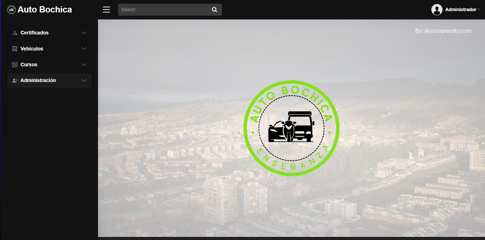
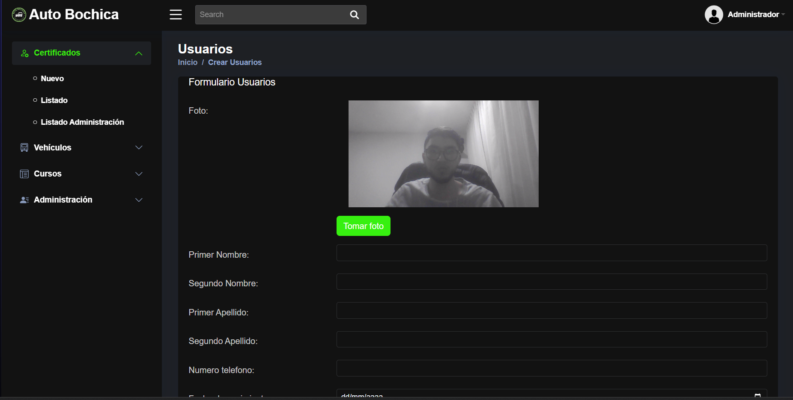
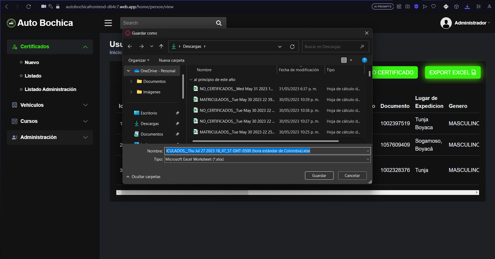
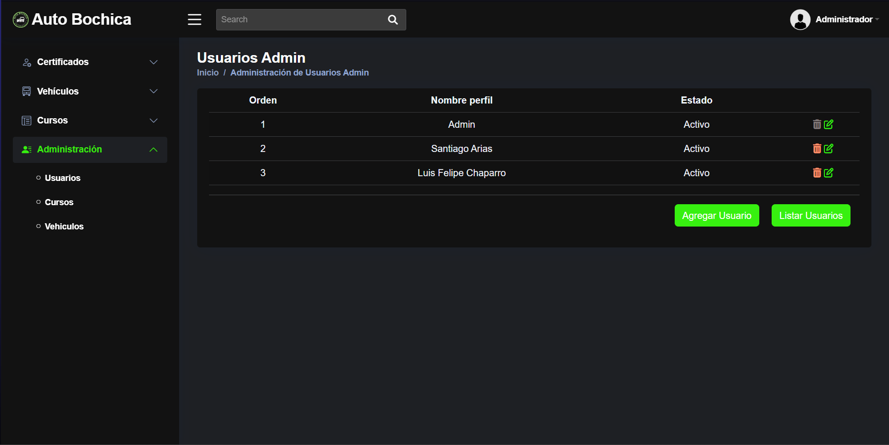
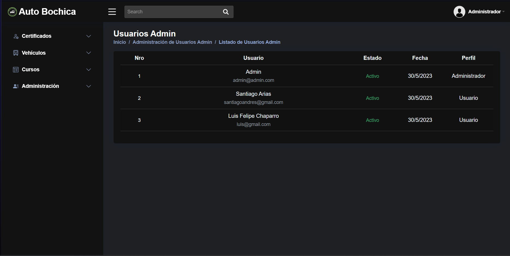
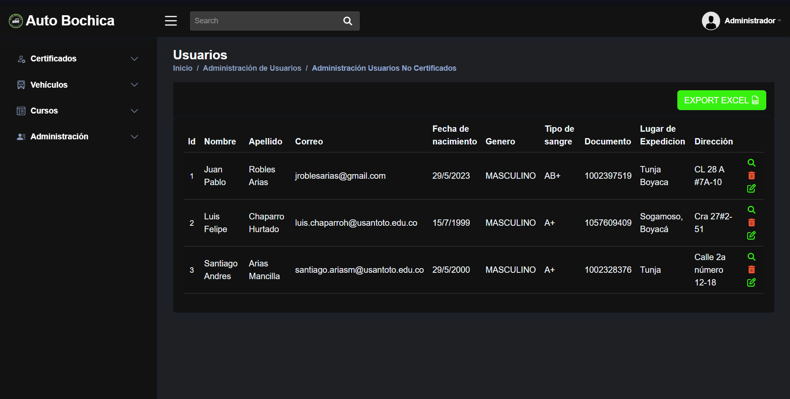
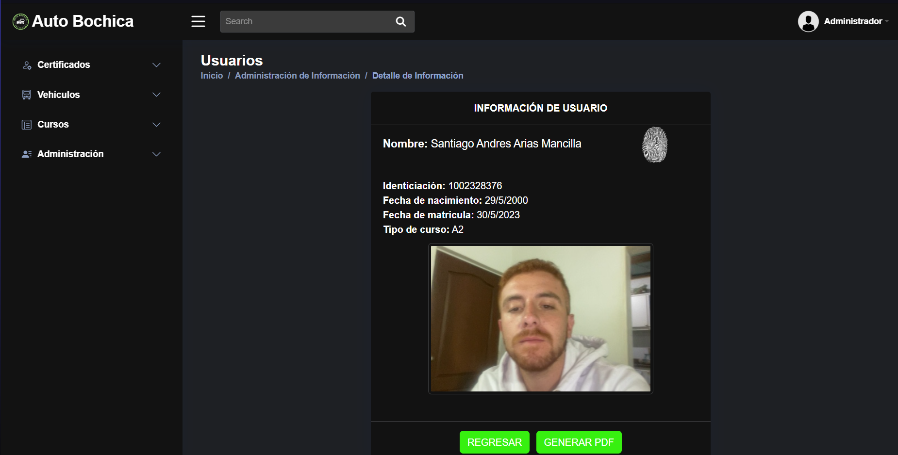
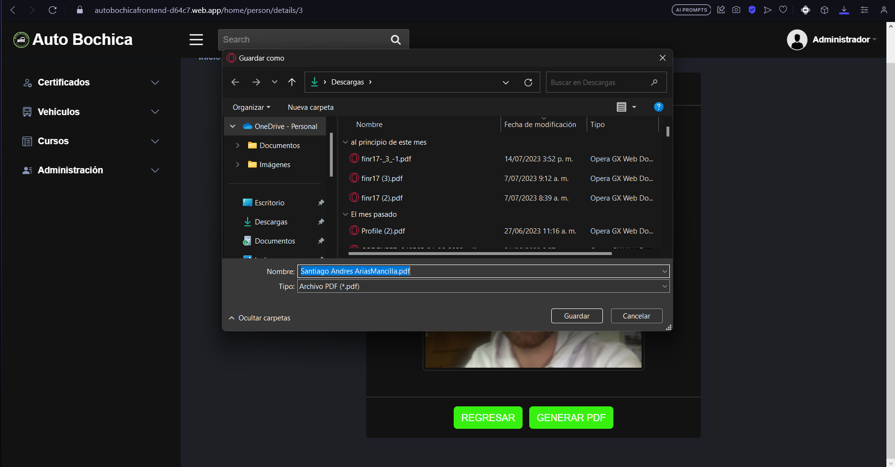
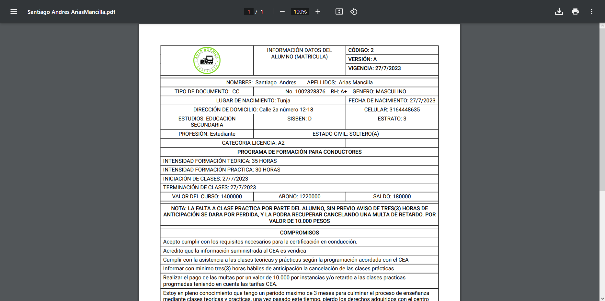
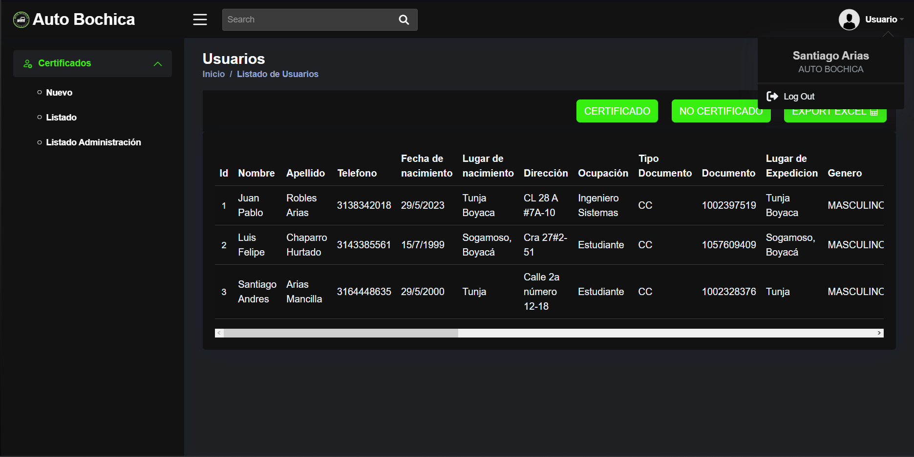

Details
Auto Bochica es una potente aplicación web desarrollada con React y Node que facilita la gestión eficiente de los certificados de clientes para una empresa automotriz. Esta herramienta brinda a los usuarios la capacidad de listar y administrar de manera sencilla los certificados emitidos, permitiendo una rápida identificación de aquellos certificados válidos y los que no lo son.
Características principales:
-
1.
Listado de Certificados: Los usuarios pueden visualizar de forma
ordenada y filtrada la lista completa de certificados de clientes.
Además, pueden realizar búsquedas por diferentes criterios, como
número de certificado, nombre del cliente o fecha de emisión, para
localizar la información requerida rápidamente.
-
2.
Filtrado por Estado: Auto Bochica permite segmentar los
certificados en dos categorías: certificados y no certificados.
Esto posibilita un control más efectivo de la validez de los
documentos, facilitando la identificación de aquellos que
necesiten renovación o actualización.
-
3.
Exportación a Excel: Para una mayor versatilidad y facilidad de
análisis de datos, los usuarios pueden exportar los registros de
certificados en formato Excel. Esta funcionalidad agiliza la
generación de informes y el seguimiento del estado de los
certificados en la empresa.
-
4.
Generación de PDF de Información del Cliente: Auto Bochica permite
la creación de informes detallados de cada cliente en formato PDF.
Estos informes contienen la información relevante del cliente,
como nombre, dirección, contacto y detalles específicos de los
certificados asociados, brindando una visión completa y detallada
de la relación con el cliente.
-
4.
Control de Usuarios: La seguridad es una prioridad en Auto
Bochica. La aplicación implementa un robusto sistema de control de
usuarios con distintos niveles de acceso. Los administradores
pueden gestionar los permisos de los usuarios, garantizando que
solo el personal autorizado pueda acceder a ciertas
funcionalidades y datos sensibles.
Project information
- Category: Web App
- Client: Hit Data
- Project date: June, 2023
- Web site: https://autobochicafrontend-d64c7.web.app